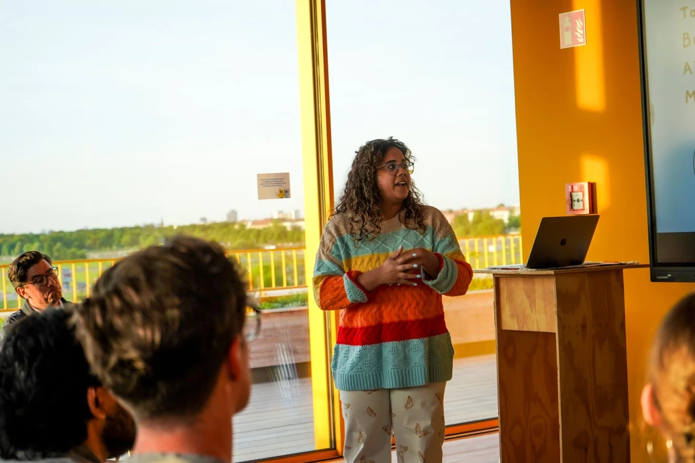
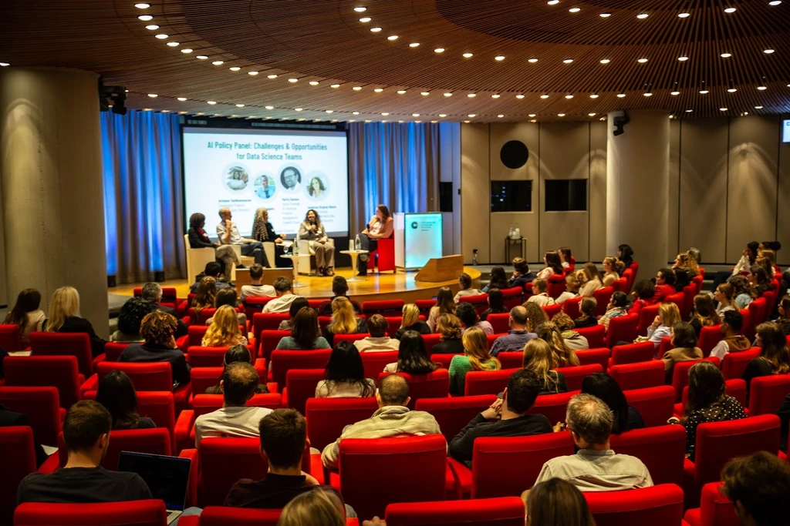
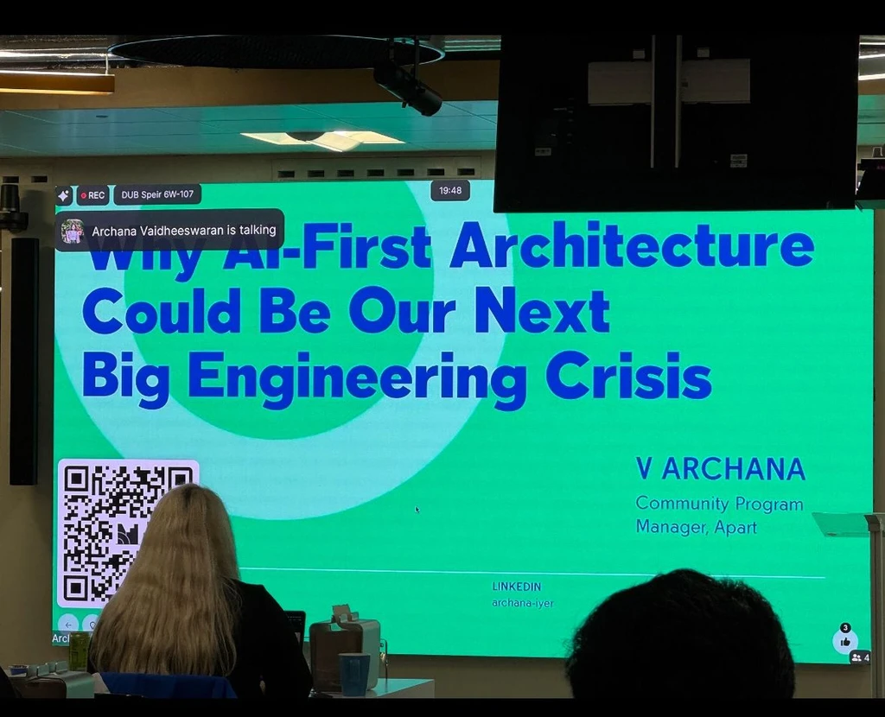

People Planet Pint Meetup
Speaker for People Planet Pint April 2025 Meetup on Sustainability and AI. Showcased my free tool Scaledown, which helps users track their carbon footprint of AI prompts.
Read attendee feedback
A timeline of talks, panels, and keynotes — from sustainability meetups and AI policy panels across Europe (2025) back to a quantization & TPUs keynote in Indonesia (2019).
Speaker for People Planet Pint April 2025 Meetup on Sustainability and AI. Showcased my free tool Scaledown, which helps users track their carbon footprint of AI prompts.
Read attendee feedback
Panelist for the Women in Data Science (WiDS) Geneva conference into the real challenges data science teams are facing right now.
See attendee posts
Spoke about why AI First Architecture Could be Our Next Big Engineering Crisis.
Watch the talk
Have you ever wondered how we can ensure AI systems remain safe and beneficial as they become more powerful? I know most of us have thought about this, and now is your chance to do something about it.
See the recap
In this talk, we walked through the process of building a ChatGPT Chrome extension — its architecture, the challenges, and the solutions — and demonstrated how it converts informal writing into a more professional form to improve accessibility.
Watch the talk
Tensor Processing Units (TPUs) are Google's custom-developed application-specific integrated circuits (ASICs) used to accelerate machine learning workloads. This talk goes over how to quantize models for TPUs.
View event page
Most participants enjoy my talks, which are filled with interactive quizzes and demos.
Your presentation was so interesting Archana, looking forward to the blog post!
Your talk was absolutely brilliant — even virtually, the impact was huge! You tackled complex challenges with clarity and opened up a conversation that's very much needed in the AI space. Looking forward to that blog post already!
It was worth attending!!!! I got to learn some insightful knowledge about AI
Amazing presentation!!
It was an interactive and an informative session. Looking forward to many more of your sessions